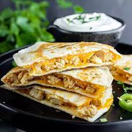

Quesadillas
Easy to wind up quesadillas for the whole family
Ingredients
- Large flour tortillas
- Grated cheese such as mild or sharp cheddar, or Monterey Jack
- Olive oil or butter
- Chicken pieces
- Fresh tomatoes, diced
- Green onions
Steps
- Heat the tortillas until air pockets form:
Heat a large skillet (cast iron works great) on medium high heat. Add a small amount of oil (about 1/2 teaspoon) and spread it around the bottom of the pan with a spatula (you could use butter as well).
Take one large flour tortilla and place it in the pan. Flip the tortilla over a few times, 10 seconds between flips. Air pockets should begin to form within the tortilla
- Add the cheese and other ingredients:
When pockets of air begin to form, take a handful of grated cheese, sprinkle over the top of the tortilla, making sure that the cheese does not land on the pan itself.
Add whatever additional ingredients you choose - green onion, sliced mushrooms, olives, tomatoes, etc. If you would like your quesadilla to be a chicken quesadilla, add some diced cooked chicken.
Take care not to layer on the ingredients too thickly - this is a quesadilla, not a quiche!
- Lower the heat and cover pan:
Reduce the heat to low and cover the pan. The pan should be hot enough by now to have plenty of residual heat to melt the cheese and brown the tortilla. If the quesadilla begins to smoke too much, remove from the heat.
After a minute, check to see if the cheese is melted. If not, return the cover and keep checking every minute until the cheese is melted.
- old the tortilla over:
When the cheese is sufficiently melted, use a spatula to lift up one side of the quesadilla and flip over the other side, as if you were making an omelette.
The tortilla should by now be browned slightly. If it is not browned, turn the heat up to high and flip the quesadilla over every 10 seconds or so until it gets browned.
- Remove quesadilla from pan and cut into wedges:
To make the lettuce to accompany the quesadilla, thinly slice some iceberg lettuce. Sprinkle some cider vinegar on it and some salt.